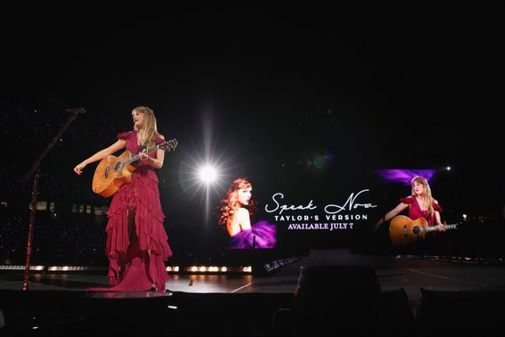
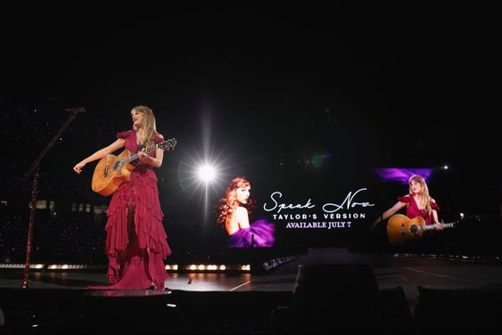

Errors tour¡
Que es? Por que los fans lo apodan asi?
El Errors Tour es un apodo cariñoso de los fans hacia el tour, debemos tener un cuenta que al ser un tour tan largo y complejo, Taylor a cometido algun que otro error cosa de la cual los fanaticos se rien con ella y de la cual surgio este apodo
Algunos momentos iconicos del Errors Tour
1. Cuando una plataforma funcionó mal durante su era de Reputation en la parada de Cincinnati,
al no poder bajarla debajo del escenario, Swift se encontró corriendo entre sus bailarines para llegar al área detrás del escenario.
Después de que los asistentes al concierto en el Paycor Stadium capturaran el momento en video, Swift recurrió a las redes sociales para burlarse de sí misma.
"Sigo siendo rápida como la mierda", comentó debajo de un clip de TikTok del incidente.
2. Un pequeño error de la era Evermore ocurrió cuando se tragó un insecto en el Soldier Field de Chicago. Cuando fue a hablar a la multitud, comenzó a
toser furiosamente, diciéndole a la audiencia: "Me tragué un insecto, lo siento mucho".
Mientras los fanáticos estallaban en risas, ella bromeó: "¿Hay alguna posibilidad de que ninguno de ustedes haya visto eso? Está bien. Me lo he tragado".
Ese no fue el único problema relacionado con la tos que sufrió Swift. También se encontró incapaz de hablar durante un set de la era Lover cuando de repente
perdió la voz.
"¿Sabes cuando no estás enfermo, un bicho no se te metió en la garganta, simplemente vas a hablar y no funciona?", preguntó antes de tranquilizar a
la audiencia: "Ya se acabó, se acabó, está bien".
Anuncios de TV!
Los anuncios de 'Speak Now' y '1989' TV
Taylor ha aprovechado la presencia de tantos fans para dar dos anuncios muy esperados: los lanzamientos de Speak Now y 1989 (Taylor's Version).
El primero se dio a principios de mayo y el segundo a mediados de agosto.
En ambos casos, ha seguido la misma estrategia, es decir, proyectar en las pantallas del reciento la carátula del disco junto a la fecha de estreno.
.jpg) 

Friendship Bracelets
Las friendship bracelets (pulseras de amistad) de Taylor Swift se crearon como una forma de conexión y comunidad entre los fans durante sus conciertos .Estas pulseras son hechas a mano y los asistentes a los conciertos las crean y las llevan consigo para intercambiarlas con otros fans durante el evento El proceso de creación suele incluir el uso de cintas de colores, cuentas y otros materiales decorativos .Los fans a menudo eligen colores y patrones que representen su amor por Taylor y sus canciones favoritas